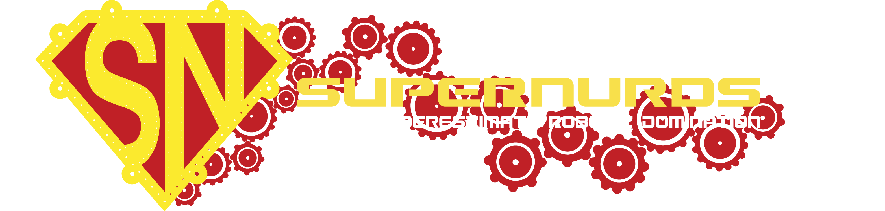
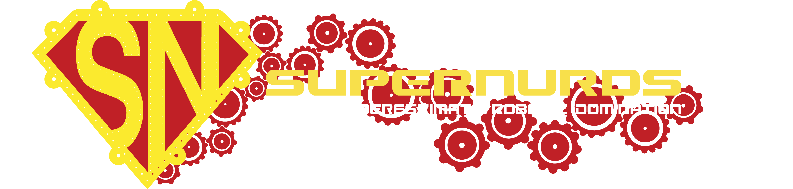
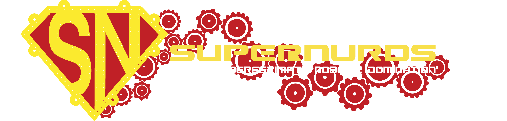

back to home

Current Programming and Business Mentor
Former Student Programming and Business Lead
Projects I have contributed to:
SuperNURDs Website
Designed website and graphics for the website
SuperNURDs YouTube
Filmed and edited videos (where credited)
SuperNURDs GitHub
Currently a programming mentor where I do code reviews and teach students java programming
IronCan (2015 Robot)
Awards and Accomplishments
Innovation in Control Award
2015 San Diego Regional Winner
4th in Hopper Divsion at World Championships
 
